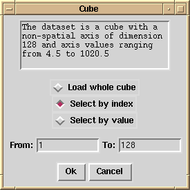

3D Data
Isys is cube-friendly. If it detects the input file is a cube, it displays the dialogue opposite to allow the user to choose how much of the non-spatial dimension to use.
The chosen slice will then be integrated into a single image.
